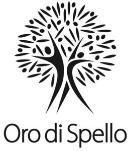

Trade Mark Journal No.2025/046 14 November 2025
WO0000001883655 (3,29)
Office of origin: Italy
Date of International Registration:19 August 2025
Date of designation in the UK:
19 August 2025

International priority date claimed: 19 August 2025
(Italy)
(302025000130399)
- Class 3
- Toilet water; bath foam; shaving balm; joss sticks; cotton swabs for cosmetic purposes; cotton balls for cosmetic purposes; cosmetic creams; shaving creams; dentifrices; deodorants for personal use; detergents, other than for use in manufacturing operations and for medical purposes; biological laundry detergents; detergents for dishwashing machines; cosmetic pads; make-up pads of cotton wool; exfoliants; extracts of flowers, perfumes; make-up foundations; fragrance refills for non-electric room fragrance dispensers; shower gels; hair spray; make-up removing milk, gel, lotions and creams; after-shave lotions; body lotions; mascara; beauty masks; cosmetic pencils; cosmetic kits; bath oils for cosmetic purposes; essential oils for personal use; oils for cosmetic purposes; eyelid shadow; bath pearls; white face powder for cosmetic purposes; cosmetic preparations for baths; cosmetic preparations for body care and beauty products; hair preparations and treatments; preparations for intimate or sanitary hygiene; deodorants and antiperspirants; leather and shoe cleaning and polishing preparations; bleaching preparations and other substances for laundry use; cleaning, polishing, scouring and abrasive preparations; cosmetic sun-protecting preparations; sun-tanning and sun protection preparations; non-medicated toiletries; depilatory preparations; vehicle cleaning preparations; shaving preparations; animal grooming preparations; oral hygiene preparations; perfumery and fragrances; perfumery; ethereal oils; cosmetics; hair care lotions; perfumes; lipsticks; wipes impregnated with a skin cleanser; tissues impregnated with make-up removing preparations; facial wipes impregnated with cosmetics; moist wipes for sanitary and cosmetic purposes; cosmetic soaps; cakes of toilet soap; skin soap; soap; soaps and gels; non-medicated scrubs for the face and body; shampoos; beauty serums; nail varnish for cosmetic purposes; nail varnish removers; talcum powder, for toilet use; toners for cosmetic purposes; make-up.
- Class 29
- Oils and fats for food; olive oil; extra virgin olive oil for food; groundnut oil; maize oil for food; soybean oil; cooking fats; preserved, frozen, dried and cooked fruits and vegetables; jellies, jams, compotes; dried fruit; olives, preserved; olives, prepared; olive paste; french fries; pickles; dried pulses; vegetables, cooked; vegetables, preserved; truffles, preserved; mushrooms, preserved; tomato preserves; eggs; milk, cheese, butter, yogurt and other milk products; tofu; meat; poultry; game, not live; charcuterie; fish, not live.
BIOSAMIA S.R.L.
Representative: ING. CLAUDIO BALDI S.R.L., VIALE CAVALLOTTI 13, I-60035 JESI (AN), ITALY